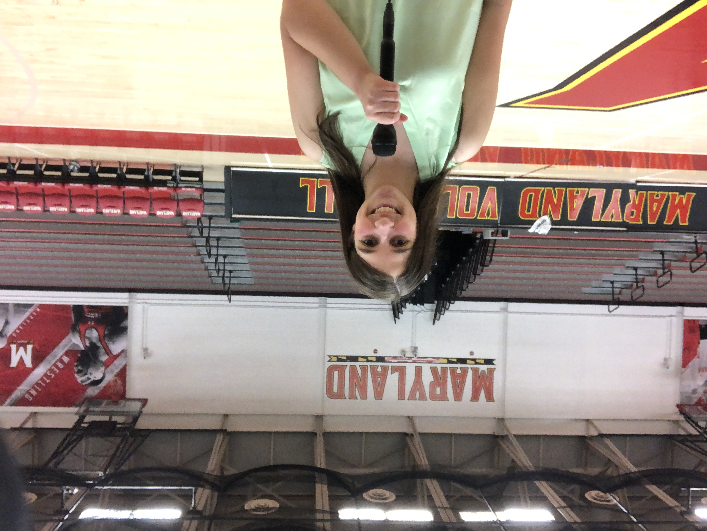

I am currently a sophomore at the Philip Merrill College of Journalism and I'm very interested in pursuing a career in sports journalism and have tried many different mediums.
I film sport games and then edit the highlights together to make a recap video. I have also made one package that was featured in the show and helped out produce the Left Bench's shows every other Monday. So far I have run teleprompter and a camera and I have watched how to produce a show from inside the studio and the production area.
I wrote preview and game recap stories on every Maryland field hockey game and some feature stories on the players. I also participated in media availabilities with the head coach and players. One of my game recap stories was featured in the Shirley Povich Sports Journalism weekly newsletter.
I do a mixture of play-by-play and analysis in Maryland Wrestling radio broadcasts. I plan to continue radio broadcasting in the spring semester and cover lacrosse and/or softball.
I planned, prepared, led and assisted with art projects for campers ranging in age from kindergarten through 5th grade. I also learned how to adapt art projects in limited time to fit different spaces or use less messy materials and delegate tasks to other counselors. All of these skills can be useful in journalism careers especially being able to adapt quickly to situations and working in groups to cover a story effectively.